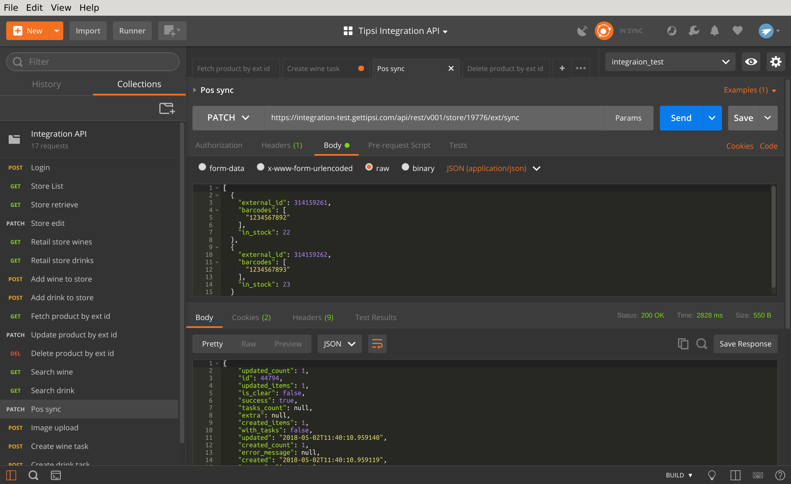

POS synchronization¶
POS sync designed for batch inventory synchronization on daily/hourly basic between Tipsi and customer retail store. Sync can be enabled for next purposes:
- To update existing products information - prices, availability and etc. It’s done as a single batch, without necessity to PATCH each product separately.
- To create unmatched products TODO in list in MIM tool. In fact, batch sync works like SQL UPSERT command - it will create all the missing products (product availability defined by external id) and update existing ones.
- To have all the products using external ids - in that case processed wine/drink information can be easily pulled back to customer programmatically.
There are two kind of sync commands - sync and sync_clear. They are almost the same:
- /api/rest/v001/store/<store_id>/ext/sync - Sync Inventory sync performs UPSERT upon passed products.
- /api/rest/v001/store/<store_id>/ext/sync_clear - Sync Inventory With Clearing performs UPSERT and marking all the unpassed products as out of stock (without deleting them).
The sample will update items with external ids 10003 and 10004, and will create a new item with ext id 10005.
See POS Sync for more details.
Migration from the old sync to external_id sync¶
For customers, who still use the old sync, where barcodes are used as primary keys, just need to populate their inventory with external_id using the old POS sync call. Once all the inventory items get external ids, it’s possible to switch to new sync described above.